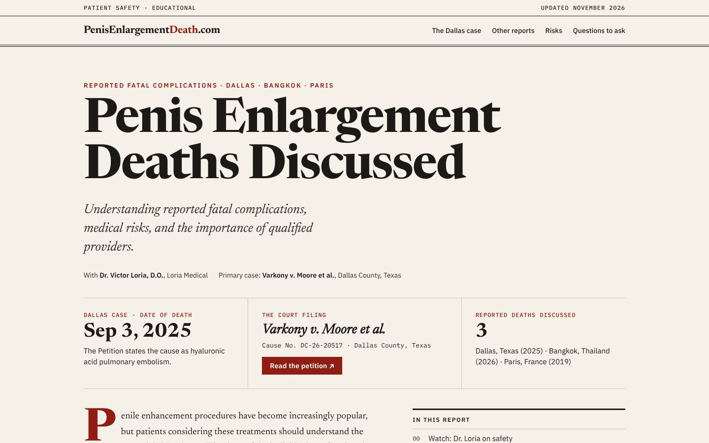
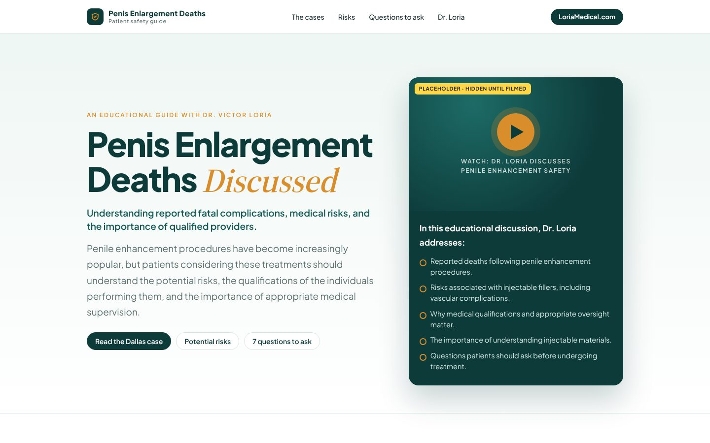
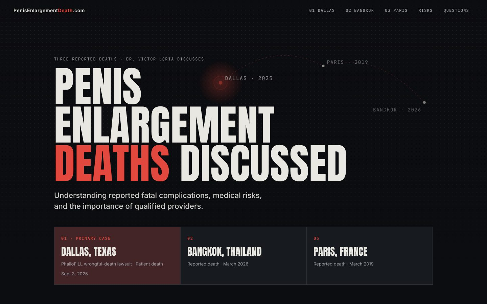

Penis Enlargement Deaths Discussed
Three design concepts for the one-page site at PenisEnlargementDeath.com. All three use Maria's copy word for word, with the Dallas PhalloFILL case as the main focus and Bangkok and Paris as shorter sections. Each one presents it in a different way. Pick the one that feels right, or mix the parts you like, and the WordPress page gets built from there.
Every concept works on phones and links to the Hoodline article, the other news sources, the court petition (PDF) and LoriaMedical.com.
- 1 page
- 3 cases · Dallas first
- Video section ready for Dr. Loria
- Petition PDF linked

The Case File
Reads like an investigative news report. Cream paper, a classic newspaper headline and deep red accents. It has a court docket card for the lawsuit, the allegations as numbered points, a treatment timeline from the petition, and a sticky "In this report" menu beside the article.
View concept 1 →
Patient Safety Guide
Calm and clinical, in deep teal, mint and amber. The video sits next to the headline. The three cases are tabs (Dallas opens first), the risks are icon cards, and the 7 questions are a checklist visitors can tick off and print.
View concept 2 →
Three Cities
Dark and cinematic, like a documentary. A bold headline over a map that links Dallas, Paris and Bangkok. Each case is a numbered chapter. Dallas gets key facts, a full-width timeline and a red autopsy-findings panel, and the video is a widescreen letterbox.
View concept 3 →What's real and what's a placeholder
- All text is Maria's copy. The only additions are the section labels, the court-filing details (case name, cause number, court, filing date) and the treatment dates in the timeline, all taken from the petition (¶¶ 67–71).
- The video is a placeholder. On the live site this section stays hidden until Dr. Loria's video is filmed, so the site can launch without it.
- Dr. Loria's photo is a placeholder box.
- The petition link opens the PDF Maria sent. The news links go to the sources in the copy.
- These are previews. The chosen concept gets built into the site's WordPress theme.